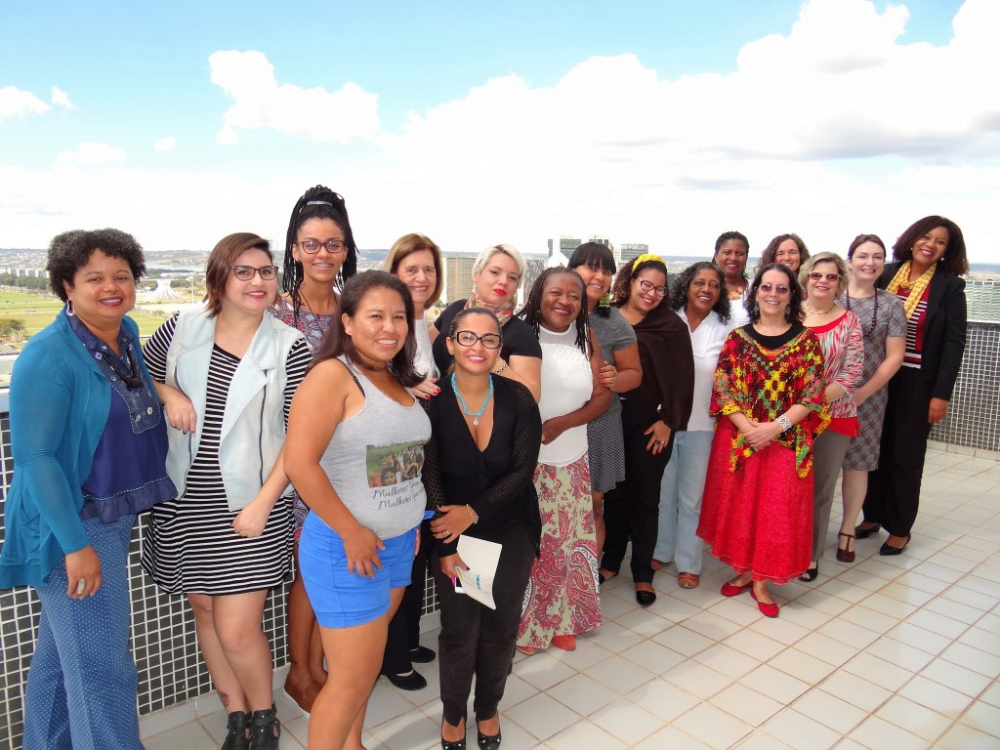
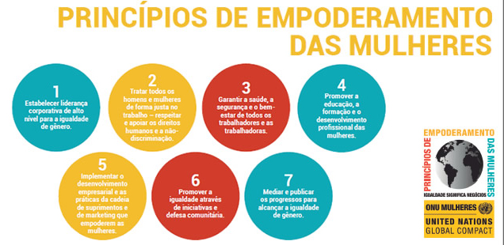
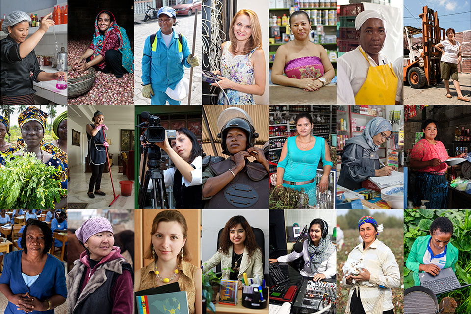

Sociedade Civil
A ONU Mulheres tem uma forte parceria com a sociedade civil organizada, principalmente com o movimento de mulheres em sua diversidade distribuída por todo o país. Possui um Grupo Assessor da Sociedade Civil ativo e criou duas instâncias de diálogo com o objetivo de aprofundar a perspectiva interseccional de seu programa. O primeiro é o Comitê Mulheres Negras rumo a um Planeta 50-50, que visa fortalecer a incorporação da perspectiva racial em seu trabalho normativo, programático, de coordenação interagencial e nas ações de comunicação e advocacy. O outro é o grupo Voz das Mulheres Indígenas, criado para facilitar a atuação em rede e a defesa dos direitos das mulheres indígenas brasileiras, sendo também um canal para facilitar o diálogo com as mulheres indígenas em suas comunidades. Adicionalmente, o escritório país atua em parceria com organizações da sociedade civil para implementar seus programas e projetos. As principais são: Fundo Elas, Empodera, Women Win, Instituto Patricia Galvão, Odara, Criola, entre outras.
GRUPO NACIONAL ASSESSOR DA SOCIEDADE CIVIL (BRASIL) DA ONU MULHERES – GASC
A participação social na ONU Mulheres Brasil ocorre por meio do Grupo Assessor da Sociedade Civil (GASC), composto por integrantes das organizações e redes feministas e de mulheres e de especialistas nas áreas temáticas da entidade, com a finalidade de prover conselhos estratégicos para a ação da ONU Mulheres no Brasil. O GASC é composto por 15 integrantes com trajetória e experiência reconhecidas e comprovadas em áreas relacionadas à igualdade de gênero, ao empoderamento das mulheres, e aos direitos humanos das mulheres, sendo originárias de organizações e redes feministas e de mulheres, assim como de outras organizações e redes de base da sociedade civil, comprometidas com os valores das Nações Unidas.
Empresas
Uma das vantagens comparativas da ONU Mulheres no Brasil se relaciona com suas parcerias consolidadas com as principais empresas do setor público e privado, incluindo suas fundações ou institutos. São exemplos, a Avon e seu instituto, a Coca-Cola e seu instituto, a Dow Chemicals (liderando uma aliança de empresas composta por Cargill, Cummins, Hays, Ernest & Young, KPMG e Whirlpool), a Fundação Ford, Itaipu Binacional, Petrobrás, Furnas, Lojas Renner, Atento, Unibanco, Bradesco, Mastercard, Carrefour, Thoughtworks, UNILEVER, Bolsa de Valores, entre outras. 1. Estabelecer liderança corporativa sensível à igualdade de gênero, no mais alto nível. 2. Tratar todas as mulheres e homens de forma justa no trabalho, respeitando e apoiando os direitos humanos e a não-discriminação. 3. Garantir a saúde, segurança e bem-estar de todas as mulheres e homens que trabalham na empresa. 4. Promover educação, capacitação e desenvolvimento profissional para as mulheres. 5. Apoiar empreendedorismo de mulheres e promover políticas de empoderamento das mulheres através das cadeias de suprimentos e marketing. 6. Promover a igualdade de gênero através de iniciativas voltadas à comunidade e ao ativismo social. 7. Medir, documentar e publicar os progressos da empresa na promoção da igualdade de gênero.
Empoderar mulheres e promover a equidade de gênero em todas as atividades sociais e da economia são garantias para o efetivo fortalecimento das economias, o impulsionamento dos negócios, a melhoria da qualidade de vida de mulheres, homens e crianças, e para o desenvolvimento sustentável. Ciente do papel das empresas para o crescimento das economias e para o desenvolvimento humano, a ONU Mulheres e o Pacto Global criaram os Princípios de Empoderamento das Mulheres. Os Princípios são um conjunto de considerações que ajudam a comunidade empresarial a incorporar em seus negócios valores e práticas que visem à equidade de gênero e ao empoderamento de mulheres.
Sites recomendados
A ONU Mulheres trabalha em parceria com os governos e com a sociedade civil para a construção de um mundo mais justo e igualitário. Confira a lista de sites recomendados de parceiras e parceiros frequentes.